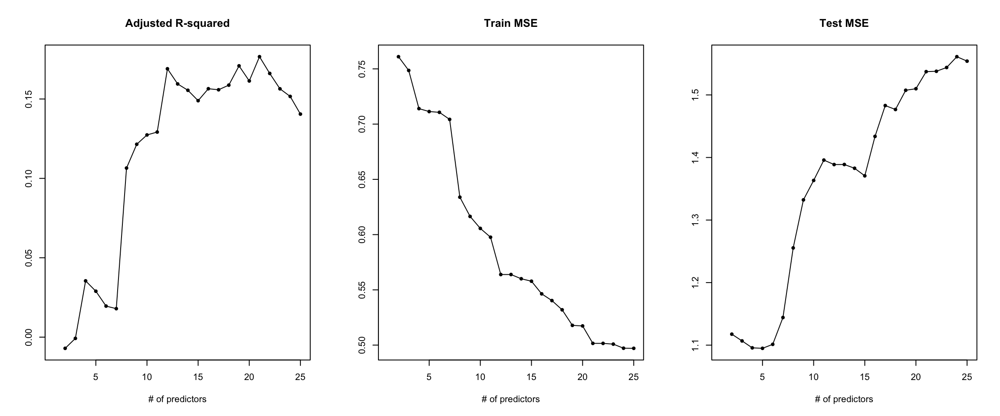
Introduction
High-dimensional data is the type of data1 which is characterized by the presence of many variables2. Due to the growing nature of variables of interest and data collection over the past years in diverse domains such as health-care/medicine, marketing, finance etc., there is an increasing need for techniques which are able to thrive in situations where the number of variables is higher, and at times even more than the number of data points available to train the model.3
1 Also known as wide data
2 potentially where the number of variables(p) is greater than the number of observations in the sample(n) i.e. \(p > n\).
3 For most Machine Learning algorithms, data at hand is usually of the form \(n >> p\), i.e. the number of data points(n) used in training the model is far higher than the number of predictors(p) in the data. However for high dimensional Machine Learning, the number of predictors(p) is usually very large, and at times more than the sample size(n), which poses a problem for most Machine Learning models.
Examples of problems common in high dimensional learning include the following:
Predicting consumer behavior and patterns in online-shopping stores, where the variables of interest, could be all search terms entered by the consumer, the click history, previous purchases and declines, demographic characteristics, and search account history. In such a problem, while the number of predictors for online behavior are many, we typically only have a few customer information.
Signal generation, and price prediction in finance. In this domain, the variables of interest are usually: technical indicators of the price series such as the moving averages, volatility, etc, the fundamental indicators such as market capitalization and several accounting ratios, analyst ratings, social media sentiment etc. In this domain too, the number of historical data points used to train models is often limited4, however the number of predictors keeps growing.
4 at least not for high-frequency trading domain
In medicine, a problem of interest is to predict whether given tumors are benign or malignant, where variables would include a number of characteristics of cells e.g. perimeter, concavity, area, smoothness etc and other variables about the patient such as patient’s demographic characteristics, lifestyle characteristics etc. The characteristics could be so many, yet the number of patients, for which we have data could be few due to patients leaving studies/treatment.
The challenges associated with learning in high dimensions, require specialized techniques suited to such data since common statistical learning methods such as least squares fail in such dimensions. Potential dangers encountered when working with high-dimensional data include:
Multi-collinearity: In the presence of a high number of predictors, the possibility of more than one pair of predictors being highly correlated increases, and this poses a challenge termed multi-collinearity in the data.5 Several machine learning models become unstable in the presence of multi-collinearity such as Neural networks, support vector machines etc, while some of them may break down completely such as multiple linear regression. Multi-collinearity introduces redundancy in model fitting, since two or more predictors attempt to explain the same variability in the response.
False positive discoveries: In high dimension data, the probability of finding one or more predictors which are significantly related to the response due to random chance and not due to a true relationship increases, which leads to the problem of false discoveries. Such false positive findings often decrease a model’s performance and hurt model interpretability.
5 Multi-collinearity refers to situations in which there are several predictors which are significantly correlated
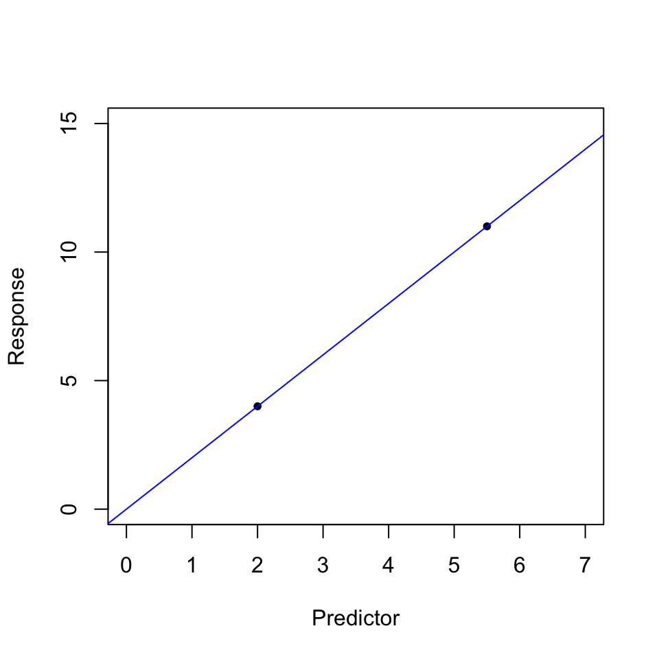
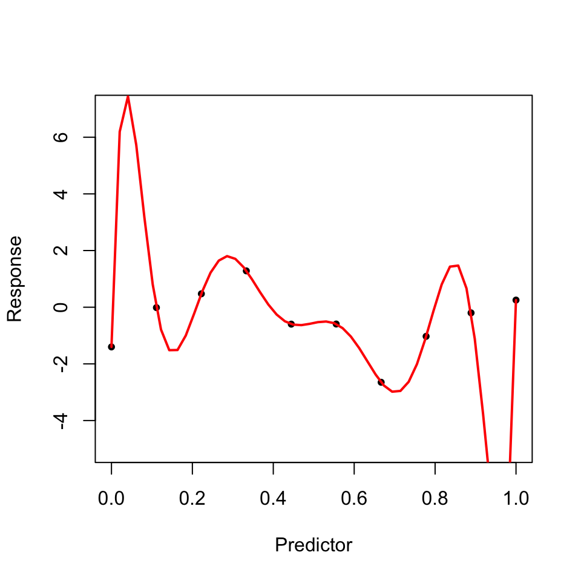
Over-fitting: In high dimensional data, where \(n = p\) or \(n > p\), then over-fitting is likely to occur. In this scenario, the models fitted have n degrees of freedom. This is illustrated in the following example: Suppose we have a sample of 2 data points, and one variable of interest(together with an intercept) i.e. \(n = p\), then fitting a linear regression model results in a perfect fit (all residuals become 0), however such a model may fail to generalize to previously unseen data(test data). This shows that in high dimensional learning, it is possible for models to perfectly fit the training data, and perform poorly in previously unseen data. In such cases, the training error is a poor approximation of test error rate.
Common performance metrics for models also fail in the high dimensional case, such as the \(R^2, Adjusted-R^2\) etc. This is because, for metrics such as \(R^2\), increasing the number of variables (p) in the model, almost always increases the \(R^2\) even when the variables have no significant relation to the response6. Consequently, possible collinearity among the predictors causes the tests of significance in models to be biased.
6 An example of an illustration showing what happens to a model when more variables which have no significant relationships to the response are added to the model. It is evident how adjusted R-squared almost always increases as the number of predictors increases, the training error always decreases as more predictors are added to a model due to possible over-fitting, but the test error increases, since the increased number of predictors add no predictive power to the model.
Models for high-dimensional data
Due to the above-mentioned challenges, this study seeks to investigate models suitable for high-dimensional learning in the context of regression and classification.
In modelling high-dimensional data, it is of interest to identify variables and interactions which have a significant relationship to the response variable, and discard those which have no significant relationship. This leads to dropping some variables in the analysis in favor of others (by setting their coefficients in the model to \(0\)), a technique commonly called feature/variable selection, or shrinking their coefficients in the model towards \(0\), a technique termed shrinkage. In this study, the models used for shrinkage and variable selection are the Ridge and LASSO regression respectively. Both ridge and LASSO regression are commonly called Penalized regression models and are also referred to as regularization techniques since they control for possible over-fitting in models.
Due to the ‘wide’ nature of data in high-dimensional settings, it is of interest to an analyst, to find a small subset of predictors, which have the most significance relation to the response. This can be achieved by transformations for reducing the dimensionality of the predictor space into a much smaller dimension, a technique known as: dimensionality reduction. The aim of the these methods is to find a subset of predictors, from the original predictor space, in such a manner that the high-dimensional problem is reduced to a low-dimensional one. It is important to note that: since the subset of predictors is constructed in such a way, that there is no correlation among the new subset of predictors, the issue of multi-collinearity is also solved. In this study we investigate the following dimensionality reduction techniques: Principle Components analysis, Kernel Principal Components analysis, Independent component analysis, and Partial least squares.
Penalized regression methods
Ridge regression
This is a shrinkage based method for regression (suitable for \(p > n\) data), which aims to supplement the Ordinary Least Squares method, especially in the context of high multi-collinearity.
Recall, that for the orindary least squares model of the form:
\[y = \beta_0 + \beta_1 x_1 + \beta_2 x_2 + ... + \beta_p x_p + \epsilon_t\]
The error function is of the form:
\[Q = \sum{(y_i - \hat{y_i})^2}\] \[where: \hat{y_i} = \beta_0 + \beta_1 x_1 + \beta_2 x_2 + ... + \beta_p x_p\]
In slving for the coefficients of regression, we obtain the following closed-form solution:
\[\beta = (X^T X)^{-1} (X^T Y)\]
However, in the prescence of many predictors, there is the ever-present risk of multi-collinearity, and thus the \((X^T X)\) matrix will not be of full rank, and hence not invertible. This in turn makes the coefficients of the regression model to grow large and unstable.
A work around is to change the error function of the regression model to be:
\[Q_{L2} = \sum{(y_i - \hat{y_i})^2} + \lambda_r \sum{\beta^2_j}\]
This choice of error function, has the advantage that the error function remains a quadratic function of the regression coefficients, and its exact closed-form solution can be obtained by equating the gradient of the error function to \(0\), and solving for \(\beta\) to obtain:
\[\beta = (X^T X + \lambda I)^{-1} (X^T Y)\]
The \(\lambda\) is called a penalty term or regularization coefficient, and this technique is called ridge regression. The penalty term must increase when the coefficients grow large, in order to enforce minimization. In result, the penalty causes the regression coefficients to become smaller and shrink towards 0, this makes the model much interpretable.
This particular choice of regularizer is known as weight decay in machine learning, or parameter shrinkage in statistics, since it has the tendancy to shrink parameter values towards 0
LASSO regression
A different choice of the regularizer could be obtained using the following error function:
\[Q_{L1} = \sum{(y_i - \hat{y_i})^2} + \lambda_L \sum{|\beta_j|}\]
This method is called: Least absolute shrinkage and selection operator: (LASSO). In modifying the error function to include the regularizer, lasso regression forces some regression coefficients to be 0, and in doing so, it practically selects model terms to an optimal number of predictors. This makes it a feature selection model.
The advantage of the LASSO regression over ridge regression is that: although ridge regression shrinks parameter estimates towards 0, it does not lead to any parameter estimates being 0, hence for the ridge regression, all (p) predictors are included in the model (which might hurt model interpretability). However, for the LASSO regression, the nature of its regularizer ensures that some parameter estimates are set to 0, hence effectively eliminating them from the model. Hence the LASSO regression has he advantage of producing simpler interpretable models than ridge regression. It should be noted however that this does not hurt the predictive ability of the ridge regression model.
Elastic-Net Regression (Combining Ridge and LASSO regression)
Since ridge regression has the advantage of combating multi-collinearity, and the LASSO regression has the advantage of being a feature/variable selection model, the two models can be combined, in order to deal with both multi-collinearity, and feature selection at once.
The form of the error function of model is shown below:
\[Q = \sum{(y_i - \hat{y_i})^2} + \lambda [ (1 - \alpha)\sum{\beta^2_j} + \alpha \sum{| \beta_j |} ]\]
Here, \(\lambda = \lambda_r + \lambda_L\) , and the proportion of \(\lambda\) associated with the lasso is denoted \(\alpha\). Thus, selecting \(\alpha = 1\) would be a full lasso penalty model, selecting \(\alpha = 0\) would be a full ridge regression model, whereas \(\alpha = 0.5\) is an even mix of a ridge and lasso model.
Search for optimal \(\lambda\)
The optimal value of \(\lambda\) for the ridge and LASSO regression model is found by means of cross-validation, where several choices of \(\lambda\) are used on the training set, and the performance of the models are evaluated on a validation set,so that the value of \(\lambda\) which yields the least training error, is preferred. For Elastic-Net regression, a common method of selecting the best regularization coefficient, is to construct a grid of \(\alpha\) values, and for each value of \(\alpha\), the best regularization coefficient \(\lambda\) is found. The fitted models are then compared based on validation error.
Dimensionality Reduction methods
Dimensionality reduction methods are useful in reducing the dimensionality of datasets, from a high-dimensional space to a low dimensional space, for a number of reasons:
High-dimensional data increases computation time in model fitting
High-dimensional data is often plagued with highly correlated variables.
These challenges above necessitate, finding only a small subset of predictors which summarize maximal variability in the original predictor space significantly. Such methods include:
Principal Components Analysis (PCA)
Kernel Principal Components Analysis (K-PCA)
Independent Component Analysis (ICA)
Partial Least Squares (PLS)
Non-negative matrix factorization (NNMF)
All the techniques listed above work by taking an input matrix \(X\), which is an \(n * p\) matrix, and return a matrix of scores (often called components), which are combinations of the columns of the original data matrix.
It is however important to note that \(PCA, K-PCA, ICA, NNMF\) are unsupervised techniques, and their aim is to reduce the number of predictors into a subspace of predictors, with the hope that the new subset of predictors will be significant in explaining the variability in the response, although this is not always the case. Their aim is to reduce the predictor space into a smaller subset with the aim of reducing computation time and possible multi-collinearity, but not necessarily improve predictive performance.
The \(PLS\) technique is a supervised technique, in that it performs dimensionality reduction, while ensuring that the subset of predictors obtained is significantly related to the response variable. Thus, when using PLS, there is some guarantee of improving predictive performance, while reducing computation time in model fitting.
In this article, we will not cover the non-negative matrix factorization method.
Principal Components Analysis
Recall that, for a data matrix A, and an identity matrix I, the eigen values are \(\lambda\) such that: \[|A - \lambda I| = 0\] The corresponding eigen vector \(\hat{v}\), of an eigen value \(\lambda\) satisfies the equation: \[(A - \lambda I) \hat{v} = 0\]
Principal Components Analysis (PCA) is the most popular dimensionality reduction method. The aim of PCA is to find a subset of predictors, which is esentially a linear combination of the original predictor space, such that the combinations explain maximal variability of the original predictor space.
In PCA, the new features formed7, are usually orthogonal to each other8. This makes it a very useful tool in dealing with multi-collinearity.
7 Often called scores or components
8 Implying they’re uncorrelated, and thus there is minimal overlap in the information provided by each score
We consider an \(n*p\) centered data matrix \(X\), where n is the number of observations, and p is the number of predictors. We then create a \(p*p\) matrix, whose columns are eigen vectors of \((X^T X)\).
The matrix \(W\) is the matrix of unit eigen vectors. In constructing \(W\), we usually ensure that eigen vectors are ranked by the highest eigen value i.e. components with the highest explanatory power come first. It follows that \(W\) is orthogonal, i.e. \(W^T = W^{-1}\)
The principal components decomposition \(P\) of \(X\) is then defined as: \(P= XW\)
A popular application of principal components analysis is principal components regression, where the predictor matrix is first reduced into a matrix of scores using PCA, and this matrix of scores is then fed into regression.
Kernel Principal Components Analysis
Recall that PCA is useful in forming component by extracting linear combinations of predictors from the original predictor space, hence it is useful only when there are linear patterns in the predictor space.
But supposing that, the functional form of the data at hand is given by the following equation below:
\[y = x_1 + x_2 + x_1^2 + x_2^2 + \epsilon_t\]
Then, using PCA will only construct linear combinations of \(x_1\) and \(x_2\), thus missing out the important quadratic relationships in the data.
Thus in the presence of possible non-linear relationships in the data, Kernel-PCA is better suited.
K-PCA extends PCA using kernel methods, so that for linear combinations of variables, K-PCA captures this using the linear kernel:
\[k(x_1, x_2) = x_1^Tx_2\]
Although the linear kernel could be substituted using any other kernel of choice, such as the polynomial kernel:
\[k(x_1, x_2) = <x_1, x_2>^d\] so that for quadratic relationships, we set \(d = 2\):
\[k(x_1, x_2) = <x_1, x_2>^2 = (x_{11}x_{12} + ... + x_{n1}x_{n2})^2 \]
Independent Components Analysis
Recall, PCA forms scores using linear combinations of the original predictor space such that the new scores formed are orthogonal with each other, and thus uncorrelated, however this does not mean that the scores are statistically independent of each other.9
9 This is because in certain cases, the correlation could be 0, however the covariance could be indicating otherwise, except in cases where data comes from the gaussian distribution, where un-correlation implies independence.
ICA bears some similarity with PCA10, however in creating the scores, it does so in a way that the scores are statistically independent of each other. Generally, ICA tends to model a broader set of trends than PCA, which is only concerned with orthogonality.
10 It should however be noted that scores generated by ICA are different from PCA scores
Given a random observed vector \(X\),whose elements are mixtures of independent elements of a random vector \(S\) given by:11
11 Both \(X\) and \(S\) are vectors of length \(m\)
\[X = AS\]
Where \(A\) denotes a mixing matrix of size \(m*m\), the goal of ICA is to find the un-mixing matrix \(W\)12, that will give the best approximation of \(S\)
12 An inverse of the mixing matrix \(A\)
\[WX \approx S\]
ICA makes the following assumptions about data:
Statistical independence in the source signal
Mixing matrix must be a square matrix of full rank.
The only source of randomness is the vector \(S\).
The data at hand is centered and whitened.13
The source signals must not have a gaussian distribution except for only one source signal.
13 Centered data is data which has been demeaned, and whitening could be achieved by first running PCA on the original data and using the whole set of components as input data to ICA
ICA constructs scores based on two methods:
- Minimization of mutual Information
For a pair of random variables \(X, Y\), the mutual information is defined as follows:
\[I(X;Y) = H(X) - H(X|Y)\] Where:
\(H(X)\): is the entropy of \(X\).
\[H(X) = - \sum_x{P(x)\log{P(x)}}\]
\(H(X|Y)\): is the conditional entropy.14
14 The entropy of \(X\) conditional on \(Y\) taking a certain value \(y\)
\[H(X|Y) = H(X, Y) - H(Y)\]
where:
\(H(X, Y)\): is the joint entropy given by:
\[H(X, Y) = - \sum_{x, y}{P(x, y) \log{P(x, y)}}\]
From the above equations, entropy can be seen as a measure of uncertainty of information in a random variable, so that the lower the value of entropy, the more information we have about the random variable of interest. Therefore by seeking for a method of maximizing mutual information, we would be seeking for components which are maximally independent.
- Maximization of non-gaussianity.
This is a second method of constructing independent components. Since in the assumptions underlying ICA, is the assumption of non-gaussianity of the source signals, then, one way of extracting components is to maximize non-gaussianity of the components.15.
15 Forcing the components to be as far as possible from the gaussian distribution
An example of a non-gaussianity measure is the Negentropy, given by:
\[N(X) = H(X^N) - H(X)\]
Where:
\(X\): is a random non-gaussian vector.
\(X^N\): is a gaussian random vector with same covariance matrix as \(X\).
\(H(.)\): is the entropy.
Sice the gaussian distribution has the highest entropy for any given covariance matrix,then the negentropy: \(N(X)\) is a strictly positive measure of non-gaussianity.
Partial Least Squares
Partial Least Squares (PLS) is a supervised dimensionality reduction method, in that the response variable is used in guiding the dimensionality reduction process unlike in the context of PCA. Hence in constructing the components, PLS does so in a way that the components not only summarize maximal variability in the predictor space, but also are related to the response significantly.
Given \(p\) predictors: \(X_1, X_2, ... , X_p\), and the response variable \(Y\), we construct linear combinations of our original predictors: \(Z_1, ..., Z_m, \hspace{2 mm} m < p\), components:
\[Z_m = \sum_{j=1}^p {\phi_{jm} X_j}\]
Where: \(\phi_{jm}\): are some constants. In computing the first PLS direction \(Z_1\), PLS sets each \(\phi_{j1}\) equal to the coefficient from a simple linear regression of \(Y\) onto \(X_j\) 16, hence it is evident that PLS places larger weight on variables which are highly correlated to the response variable. The second PLS direction is first computed by taking the residuals after regression each variable on \(Z_1\)17. The second PLS direction: \(Z_2\) is computed using the orthogonalized data in the same fashion as \(Z_1\), and this procedure is repeated to obtain the \(m\) PLS components.
16 It can be shown that this coefficient is proportional to the correlation between \(X_j\) and \(Y\)
17 The residuals are interpreted as: amunt of information that has not been accounted for by the first PLS direction
Data
The data used in modelling is a financial dataset aimed at using various statistical and financial metrics to predict the return for quarterly returns data for a selected stock price series. The dataset is comprised of 78 numerical predictor variables(statistical and financial metrics), and a response variable18. The dataset is constructed using the metrics from the package PerformanceAnalytics in R, and using the return series of KCB Group from the period 1st January 2001, to 31st January 2021. The financial benchmarking metrics are computed using FTSE NSE 2019 as the benchmark. The nature of the dataset makes it impossible to fit a standard Multiple Linear Regression model, or even a Generalized Linear Model(GLM) to the data (since \(p(78) >> n(64)\), in the training dataset). A glimpse of the first 49 variables present in the data are shown below:20
18 The return for a particular quarter in the regression setting, and the Direction(i.e. whether there was a rise/drop in the quarterly return), in the classification setting
19 A price weighted portfolio of 20 best performing counters in the Nairobi Securities Exchange as the benchmark
20 Note that the variable Direction, which is the response variable in the classification setting is not included in the glimpse of the data. It is a binary variable constructed from the differenced Annualized Return variable, such that if the change in return is Negative, the Direction is DOWN indicating that the stock dropped in terms of quarterly returns, otherwise, the Direction is UP, indicating that the stock quarterly return rose, from the previous quarter.
| 2001//2 | … | 2020//4 | |
|---|---|---|---|
| Annualized Return | 0.0294000 | … | -0.7567000 |
| Annualized Std Dev | 0.6393000 | … | 0.1417000 |
| Annualized Sharpe (Rf=30.48%) | -0.2063000 | … | -2.8019000 |
| rho1 | 0.0151000 | … | 0.3624000 |
| rho2 | 0.2120000 | … | 0.0839000 |
| rho3 | -0.0593000 | … | -0.1306000 |
| rho4 | 0.0193000 | … | -0.1439000 |
| rho5 | 0.0444000 | … | -0.1711000 |
| rho6 | -0.0601000 | … | -0.2266000 |
| Q(6) p-value | 0.7102000 | … | 0.0069000 |
| daily Std Dev | 0.0403000 | … | 0.0089000 |
| Skewness | 1.2874000 | … | 0.2103000 |
| Kurtosis | 12.6280000 | … | 3.8876000 |
| Excess kurtosis | 9.6280000 | … | 0.8876000 |
| Sample skewness | 1.3500000 | … | 0.2205000 |
| Sample excess kurtosis | 10.5247000 | … | 1.0610000 |
| Semi Deviation | 0.0263000 | … | 0.0061000 |
| Gain Deviation | 0.0382000 | … | 0.0065000 |
| Loss Deviation | 0.0298000 | … | 0.0059000 |
| Downside Deviation (MAR=40%) | 0.0267000 | … | 0.0072000 |
| Downside Deviation (Rf=30.48%) | 0.0265000 | … | 0.0070000 |
| Downside Deviation (0%) | 0.0260000 | … | 0.0063000 |
| Maximum Drawdown | 0.2796000 | … | 0.0946000 |
| Historical VaR (95%) | -0.0482000 | … | -0.0151000 |
| Historical ES (95%) | -0.0849000 | … | -0.0186000 |
| Modified VaR (95%) | -0.0414000 | … | -0.0142000 |
| Modified ES (95%) | -0.0414000 | … | -0.0182000 |
| daily downside risk | 0.0267000 | … | 0.0072000 |
| Annualised downside risk | 0.4235000 | … | 0.1145000 |
| Downside potential | 0.0120000 | … | 0.0043000 |
| Omega | 0.9251000 | … | 0.5485000 |
| Sortino ratio | -0.0338000 | … | -0.2707000 |
| Upside potential | 0.0111000 | … | 0.0024000 |
| Upside potential ratio | 0.7519000 | … | 0.7749000 |
| Omega-sharpe ratio | -0.0749000 | … | -0.4515000 |
| Sterling ratio | -0.0598000 | … | -0.4983000 |
| Calmar ratio | -0.0812000 | … | -1.0249000 |
| Burke ratio | -0.0842000 | … | -1.2829000 |
| Pain index | 0.1874000 | … | 0.0511000 |
| Ulcer index | 0.2195000 | … | 0.0548000 |
| Pain ratio | -0.1296000 | … | -1.9282000 |
| Martin ratio | -0.1107000 | … | -1.7996000 |
| Minimum | -0.1264000 | … | -0.0231000 |
| Quartile 1 | -0.0149000 | … | -0.0054000 |
| Median | 0.0000000 | … | 0.0000000 |
| Arithmetic Mean | 0.0007000 | … | -0.0004000 |
| Geometric Mean | -0.0001000 | … | -0.0004000 |
| Quartile 3 | 0.0146000 | … | 0.0041000 |
| Maximum | 0.2015000 | … | 0.0243000 |
| SE Mean | 0.0050000 | … | 0.0011000 |
| LCL Mean (0.95) | -0.0094000 | … | -0.0026000 |
| UCL Mean (0.95) | 0.0107000 | … | 0.0019000 |
| StdDev Sharpe (Rf=0.1%, p=95%): | -0.0129949 | … | -0.1765017 |
| VaR Sharpe (Rf=0.1%, p=95%): | -0.0126389 | … | -0.1106584 |
| ES Sharpe (Rf=0.1%, p=95%): | -0.0126389 | … | -0.0865619 |
| Alpha | 0.0073000 | … | -0.0010000 |
| Beta | 4.0468000 | … | 0.5569000 |
| Beta+ | 11.4929000 | … | 0.6488000 |
| Beta- | 2.4824000 | … | 0.5098000 |
| R-squared | 0.1222000 | … | 0.0964000 |
| Annualized Alpha | 5.2407000 | … | -0.2196000 |
| Correlation | 0.3495000 | … | 0.3104000 |
| Correlation p-value | 0.0046000 | … | 0.0125000 |
| Tracking Error | 0.6221000 | … | 0.1391000 |
| Active Premium | 0.1449000 | … | -0.1316000 |
| Information Ratio | 0.2330000 | … | -0.9462000 |
| Treynor Ratio | -0.0691000 | … | -0.6005000 |
| Beta CoVariance | 4.0468000 | … | 0.5569000 |
| Beta CoSkewness | -14.5580000 | … | 0.5195000 |
| Beta CoKurtosis | 3.8377000 | … | 0.8864000 |
| Specific Risk | 0.5943000 | … | 0.1336000 |
| Systematic Risk | 0.2234000 | … | 0.0440000 |
| Total Risk | 0.6349000 | … | 0.1407000 |
| Up Capture | 6.2220000 | … | 0.2129000 |
| Down Capture | 3.2021000 | … | 0.4310000 |
| Up Number | 0.6538000 | … | 0.3824000 |
| Down Number | 0.4118000 | … | 0.5333000 |
| Up Percent | 0.6538000 | … | 0.2353000 |
| Down Percent | 0.5882000 | … | 0.6333000 |
A chart of the correlation between the predictor variables is shown below:
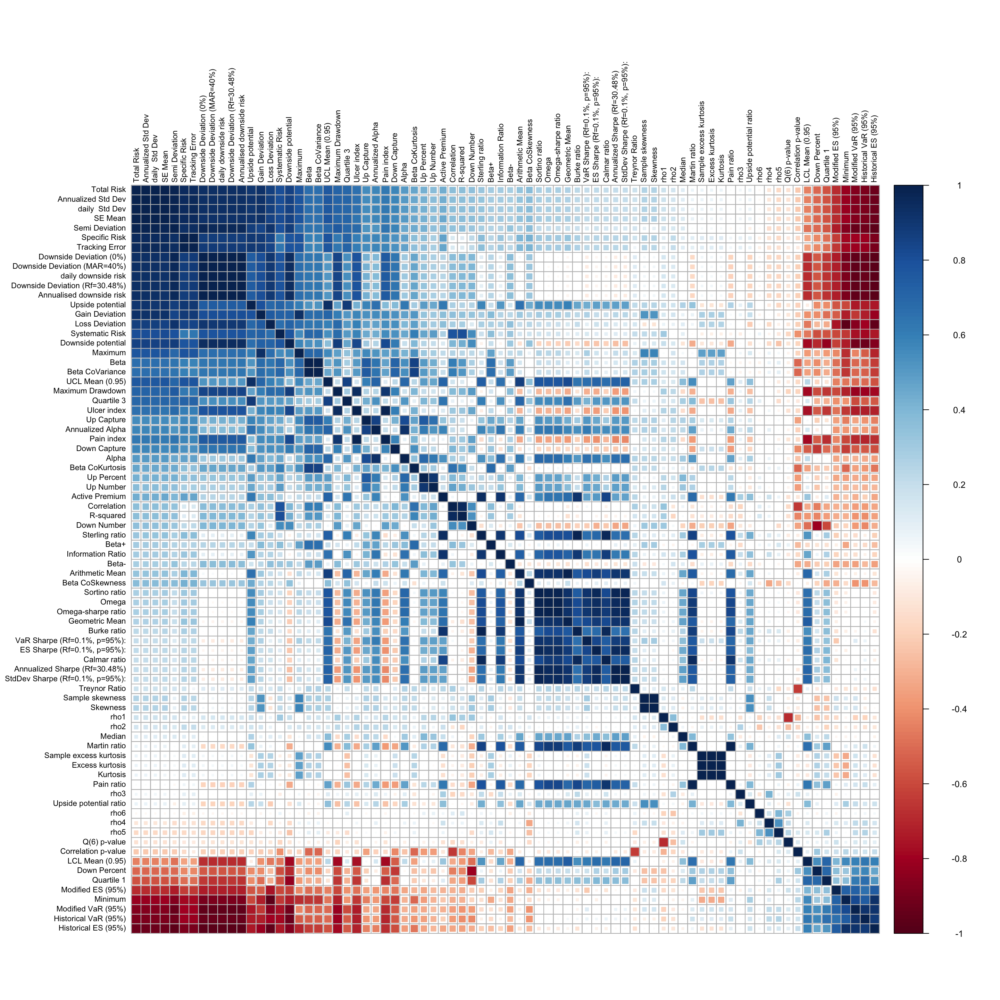
It is evident that there exists (both positive and negative) high correlation between the predictors, which poses a challenge if multi-collinearity in the model fitting process. The high positive correlation is visible in predictors which are related to measures of downside risk, while the high negative correlation is evident between variables which measure tail risk, and those which measure downside risk. There is little to no correlation between variables which measure central tendancy (mean and median returns, and their respective ratios) and the variables which measure the riskiness of the returns series.
For both models, the training and testing sets are constructed from the data using simple random sampling of the original data, so that 80% of the full dataset goes into training the models, while the remaining 20% of the data goes to the testing data. For the classification model, the resulting subsets are analyzed to ensure that there is class balance in the response variable.
The key reason we randomize the data, when splitting into training and testing set, is because, for the purpose of this analysis, we are not interested in the temporal structure of the data.
In the regression setting, the predictor variables are lagged by one time period, so that the financial metrics of of quarter \(i-1\) are used in predicting the return for quarter \(i\). In the classification setting, since the Direction variable is automatically lagged, we back-shift it, so that, the financial metrics of quarter \(i-1\), are used in predicting the Direction of the next quarter \(i\). This is necessary since, it helps us in mitigating look-ahead bias.
Models
Regression model (I)
Ridge Regression
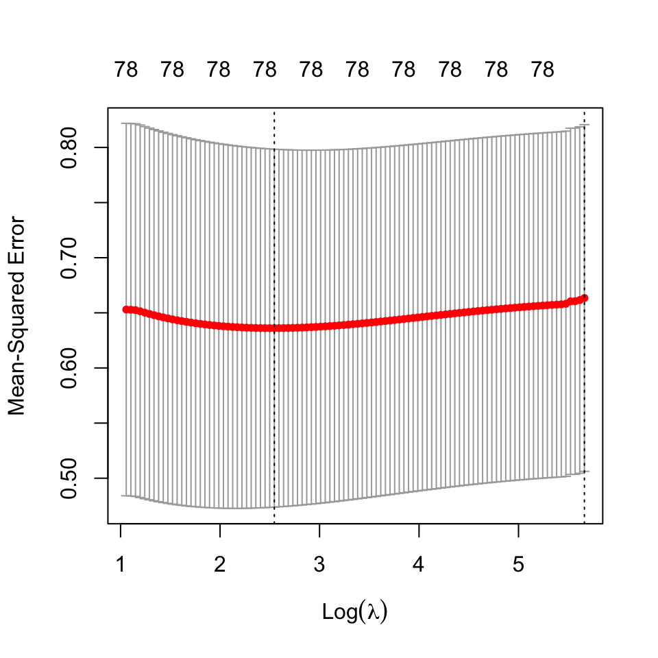
We proceed to fit ridge regression on the data, and select the regularization parameter using cross-validation21. The cross validation statistics are shown below:
21 The best estimate for \(\lambda\) using cross validation was found to be: 12.75054
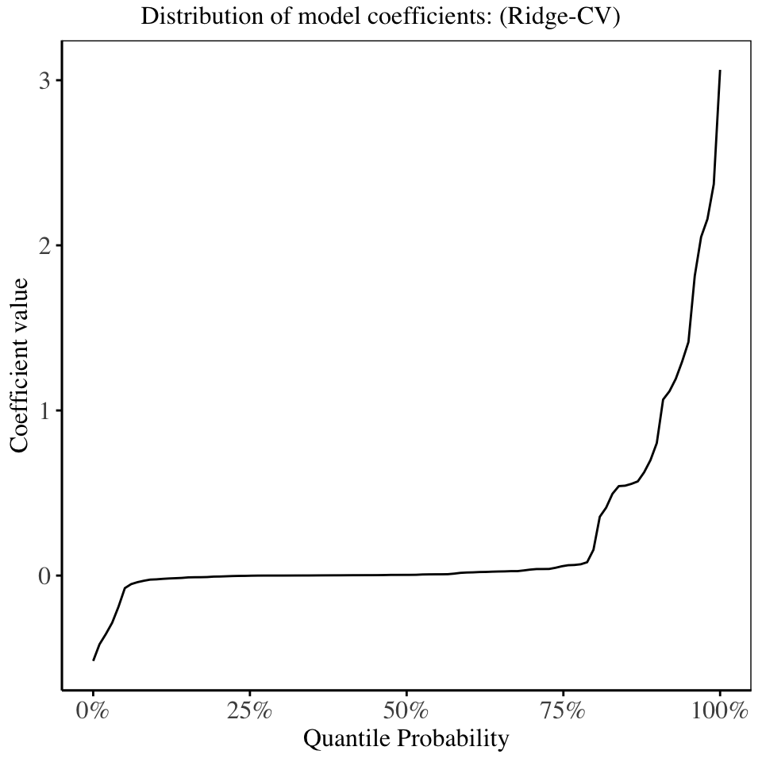
The model fitted using the regularization parameter obtained by cross validation (Ridge CV), has roughly 70% of the model coefficients shrunken to be close to 0, showing how effective ridge regression is in producing interpretable models.
LASSO Regression
We proceed to fit LASSO regression on the data, and select the regularization parameter using cross-validation22. The cross validation statistics are shown below:
22 The best estimate for \(\lambda\) using cross validation was found to be: 0.1893415.
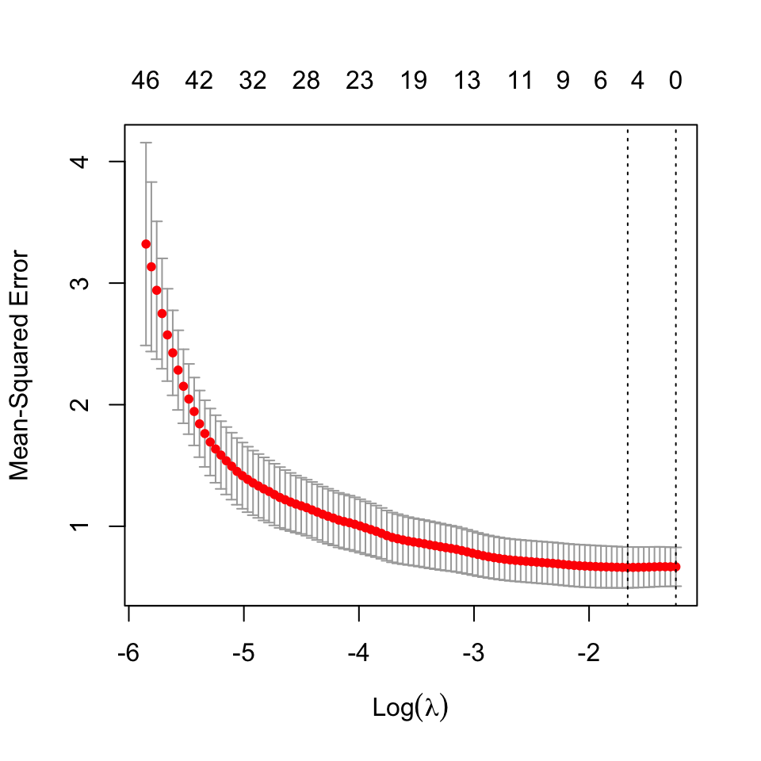
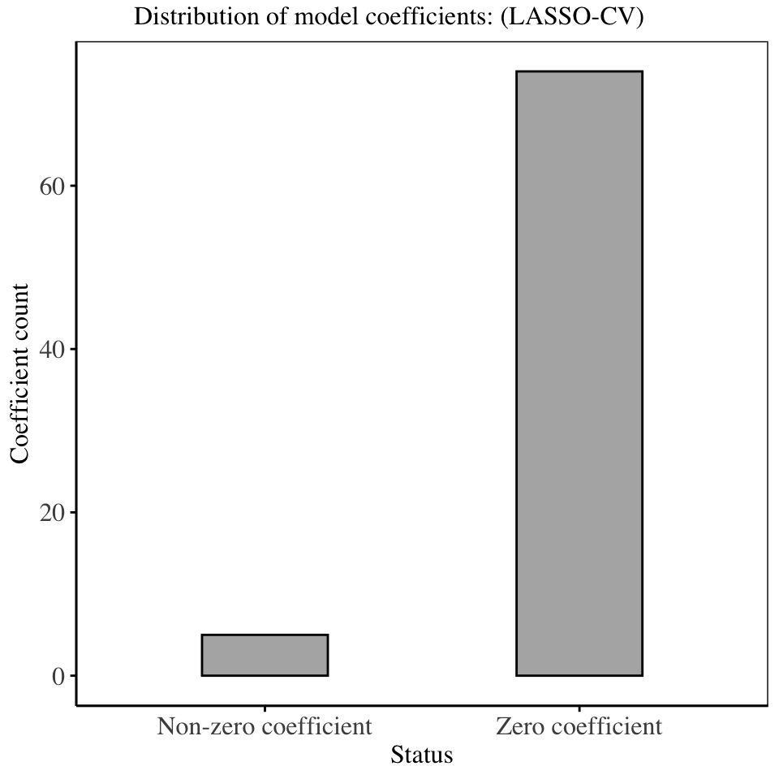
The model fitted using the regularization parameter obtained from cross validation as shown above has forced majority of the model coefficients to be 0, thereby removing the variables from the model. The LASSO regression technique is therefore important in variable selection, since by setting some model coefficients to 0, it effectively removes them from the model, leaving us with a much smaller and interpretable model.
Elastic Net Regression
In this section, we fit an Elastic Net model, which is a mixture of both ridge and LASSO regression. We select the mixing-weight based on two methods:
- We compute the model regularization parameter \(\lambda\), as a sum of the cross validation value of \(\lambda\) computed in ridge regression, and that computed from LASSO regression. i.e.
\[\lambda = \lambda_R + \lambda_L\] We then run a cross validation using this fixed \(\lambda\) on several values of \(\alpha\), and obtain the statistics as shown in the following chart:
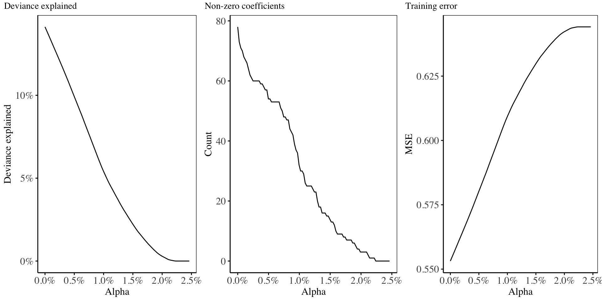
- In this second method, we construct a grid of \(\alpha\) values which are equally spaced on the range \([0, 1]\), and for each \(\alpha_i\), we perform cross validation on the training set to obtain the most suitable value of the regularization parameter \(\lambda_i\).23 The result is shown below:24
23 This is the most suitable technique to use in Elastic-Net regression.
24 Cross validation is performed to determine the best value for the regularization coefficient for every value of alpha chosen. The value of alpha = 0.386387387, and the corresponding lambda = 0.1106008, gave the lowest training error(0.4), as well as the highest deviance(37%), using only 19 non-zero model coefficients.
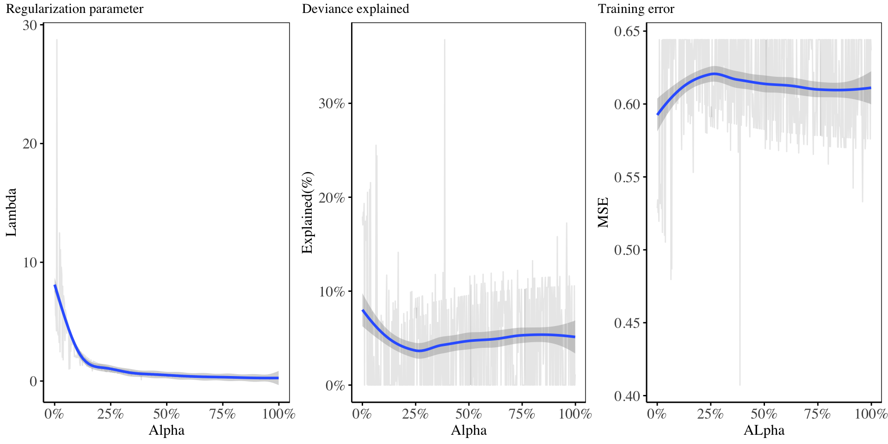
From the above chart, it shows that, as the value of \(\alpha\) increases, then the regularization parameter \(\lambda\) reduces, which shows that for this model, a very small proportion of \(\lambda\) was attributed to the LASSO penalty. The deviance resulting from this is quite low (less than 30%). The training error, as well as the deviance are suitable for small values of alpha chosen. For the Elastic Net regression, we will proceed with this \(2^{nd}\) model hyper-parameters, since it gives a lower training error, for few variables, as compared to the rest.
Principal Components Regression
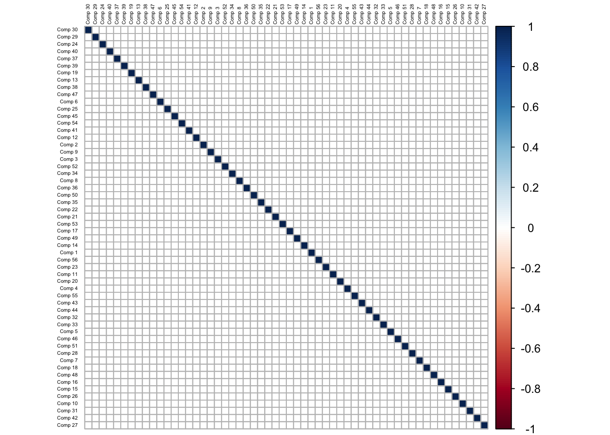
In this section, Principal components analysis model is fitted using only 56 principal components and the results of the Principal Components Regression are displayed.
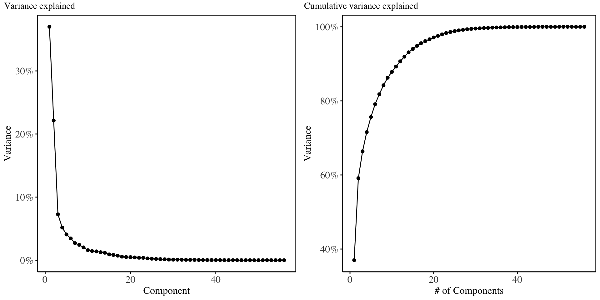
From the scree-plot above, it is evident that the first two components account for maximal variability in the predictor matrix. In choosing the suitable number of components to run regression with, we examine the plot of cross-validation error below:
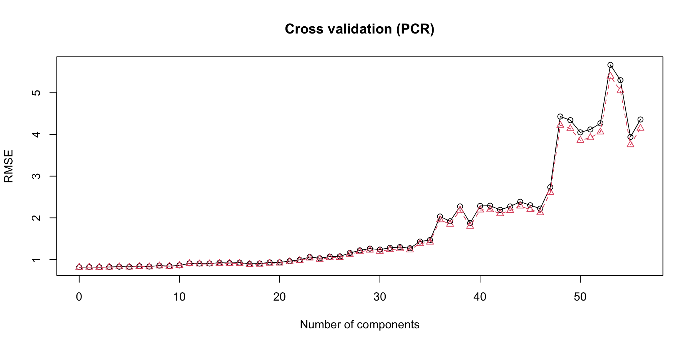
From the validation plot using RMSE as the error metric, the model with the lowest cross validation error is the 2-components model, which we will proceed with.
Kernel Principal Components Regression
oper 1 step center [training]
oper 2 step scale [training]
The retained training set is ~ 0.05 Mb in memory.oper 1 step center [training]
oper 2 step scale [training]
oper 3 step kpca [training]
The retained training set is ~ 0.02 Mb in memory.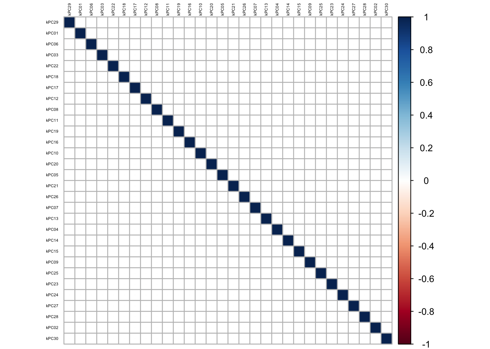
In this section, the Kernel-PCA is first performed on the predictor matrix, and then the most optimal subset of the resulting components constructed is used to fit a linear regression model on our training dataset. For the Kernel-PCA, we chose a radial basis kernel, where the hyper-parameter \(\sigma\) was chosen automatically based on our data.
The estimated value of \(\sigma\), is based upon the 10%, and 90% quantile of \(||x - x^`||^2\), where we chose \(\sigma\) as the median value of: 0.008732801.
The charts below show the percentage variability in the original predictor matrix explained by the resulting kernel principal components:
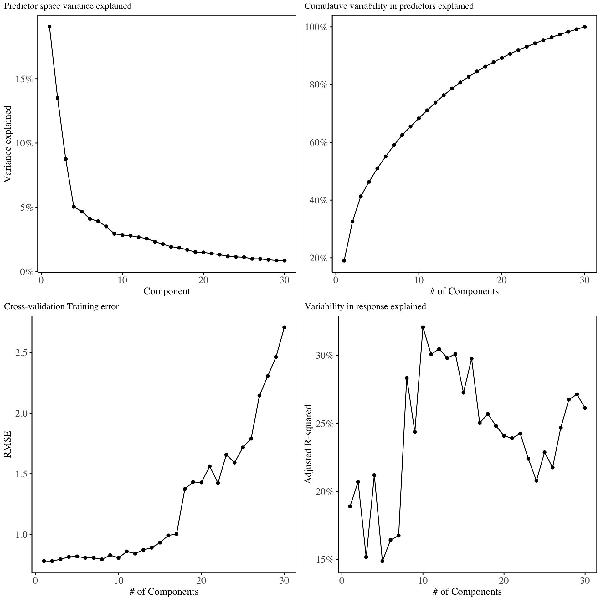
From the scree plot on chart 1, it is evident that the first 4 kernel principal components explain maximal variability in the original predictor matrix. The cross validation training error increases as more components are added into the model. In selecting the optimal number of principal components to include in the model, we select 10 components, since this gives the highest amount of variability explained in the response variable.
Partial Least Squares
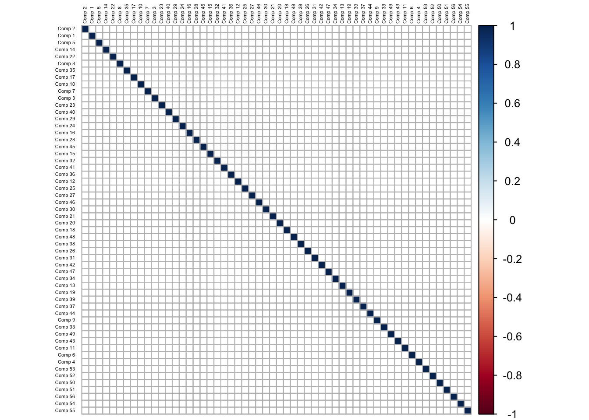
This section covers the analysis section for the partial least squares model. The PLS model is fitted using cross-validation, and the data is centered and scaled before the model fitting process.
The scree-plot for the PLS model is shown below
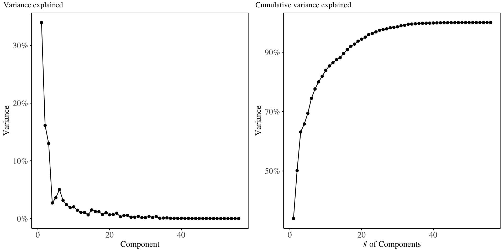
The above chart shows that the first 4 components explain majority of the variability in the original predictor matrix (roughly 70%). The Training error from cross validation is shown below:
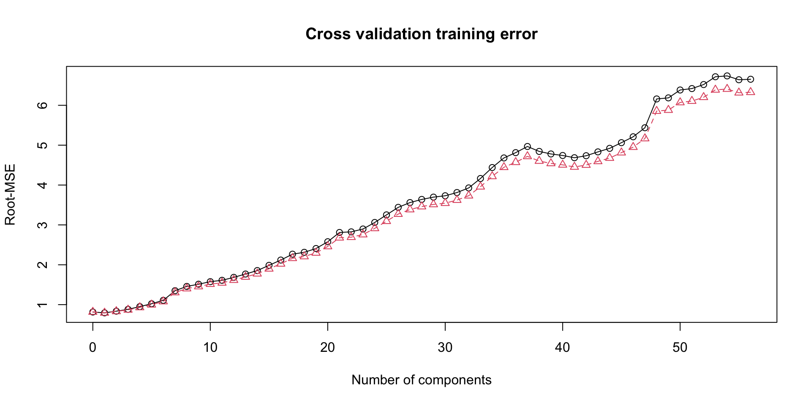
From this chart, we select only the first component, to include in our final PLS model, since it gives the lowest cross validation error. A comparison of the variability in the response explained by the PCR and PLS model is shown below, in order to capture the difference between PLS and PCR.
To examine the difference between PLS and PCA in explaining the response variable, we examine the (%) variance explained in the response by each component as shown below:
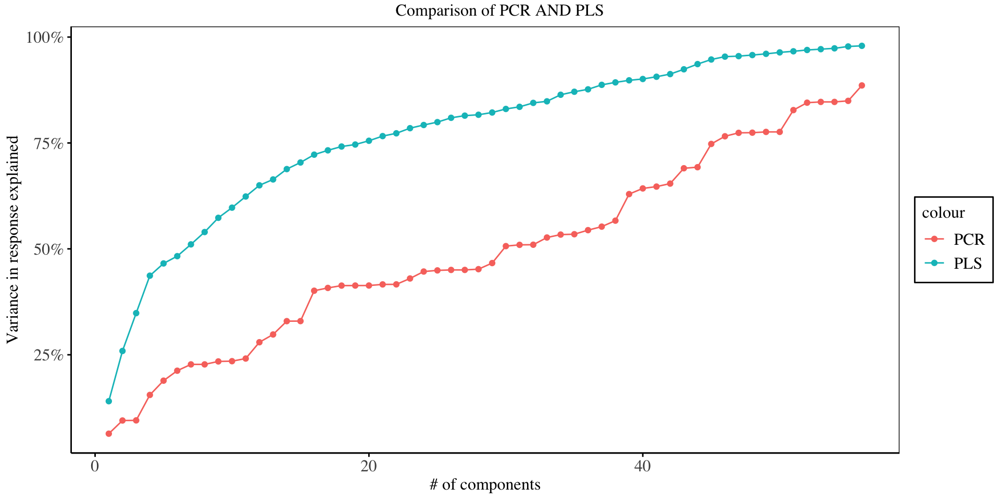
From the chart above, it is evident that for any number of principal components, the PLS explains the highest variability in the response variable, since it is a supervised dimensionality reduction technique, where the response variable guides the reduction process, as compared to the PLS which is an unsupervised technique.
Independent Components Analysis
oper 1 step ica [training]
The retained training set is ~ 0.02 Mb in memory.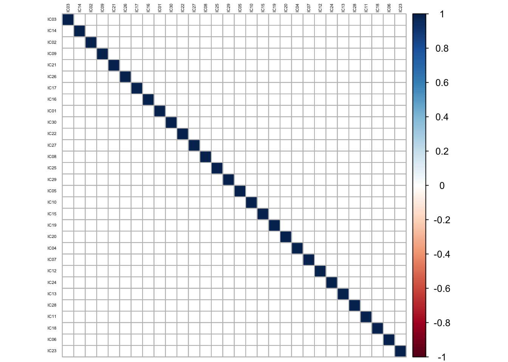
This section gives a summary of the analysis performed using Independents Components Analysis. For the ICA, only 30 independent components are constructed. Results from the cross validation analysis performed on ICA features is shown below:
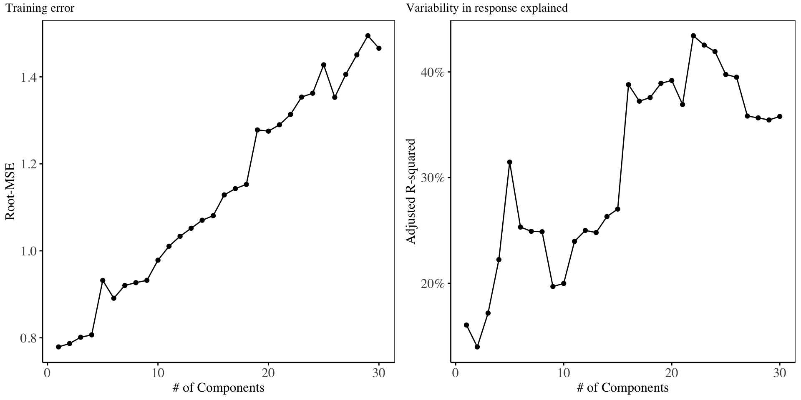
Based on the cross validation plots, we proceed with an regression model fitted with only the first ICA components.
Comparison of models
In this section, we compare all models fitted on the testing data. We use the mean squared error to gauge the best models.
| model | Training.error | Testing.error |
|---|---|---|
| Ridge(CV) | 0.5524857 | 0.4890077 |
| LASSO(CV) | 0.5690525 | 0.4767853 |
| Elastic-Net | 0.4072456 | 0.4338640 |
| PCR | 0.5830379 | 0.5439550 |
| PLS | 0.5536653 | 0.5070605 |
| k-PCA | 0.3623230 | 0.4342610 |
| ICA | 0.6424859 | 0.4966551 |
The charts on performance are shown below:
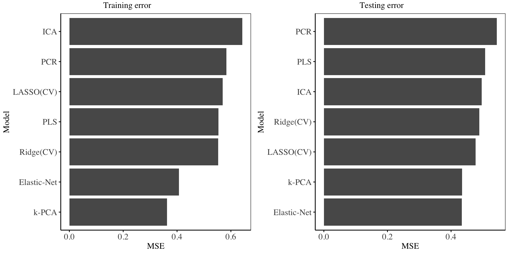
From the above charts and statistics, it is evident that the Kernel PCA, and Elastic-Net regression model emerge the best, and their performance in both the training set and testing set is consistent. The PCR, PLS and ICA model offer a poor fit to the data in both two sets of data. The Ridge and LASSO regression models have more less the same performance in both sets of data. The performance of Kernel PCA indicates that there exists some non-linear dependencies on the data - which Kernel-PCA is good at uncovering as compared to PCA.
Classification models (II)
Ridge Regression
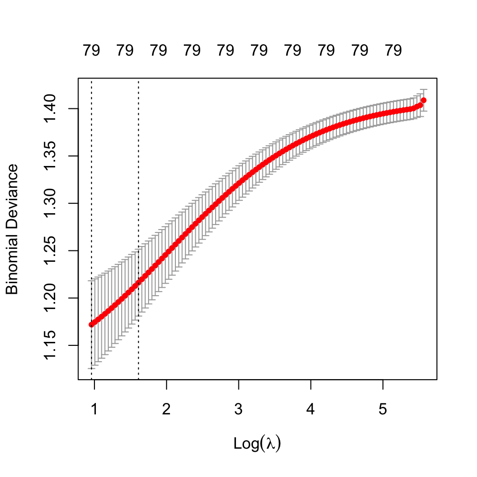
In this section, we analyze a ridge regression model for classification A suitable regularization parameter was obtained using cross-validation25. The model fit statistics are shown below:
25 The best estimate for \(\lambda\) using cross validation was found to be: 2.610173
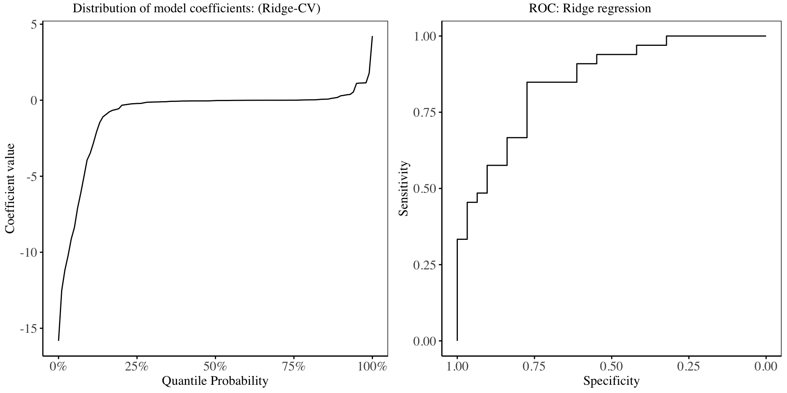
In the chart above, it is evident that about 60% of the model coefficients have shrunk to be close to 0, showing how effective ridge regression is in producing interpretable models. The performance of the ridge regression model on the training dataset is shown in the Receiver Operating Characteristic Curve, with an AUC of: 0.85435.
LASSO Regression
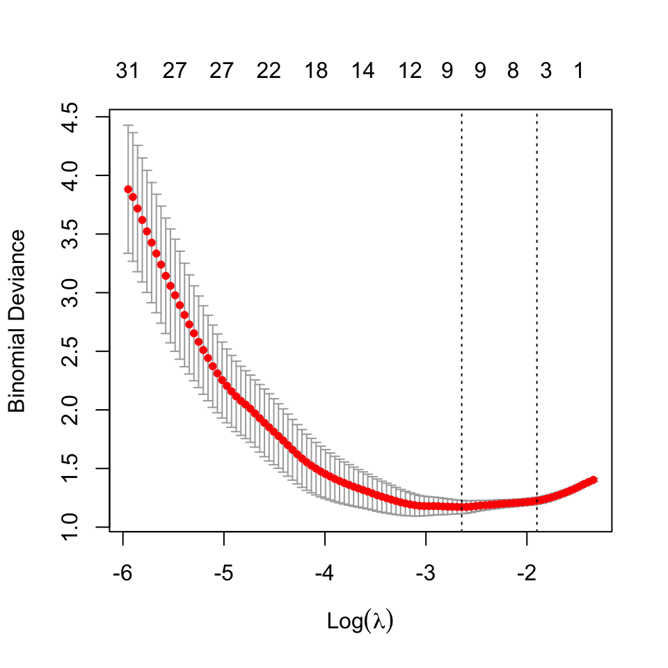
In this section, we analyze the LASSO regression model fitted. A suitable regularization parameter was obtained using cross-validation26. The model fit is displayed below:
26 The best estimate for \(\lambda\) using cross validation was found to be: 0.07095985
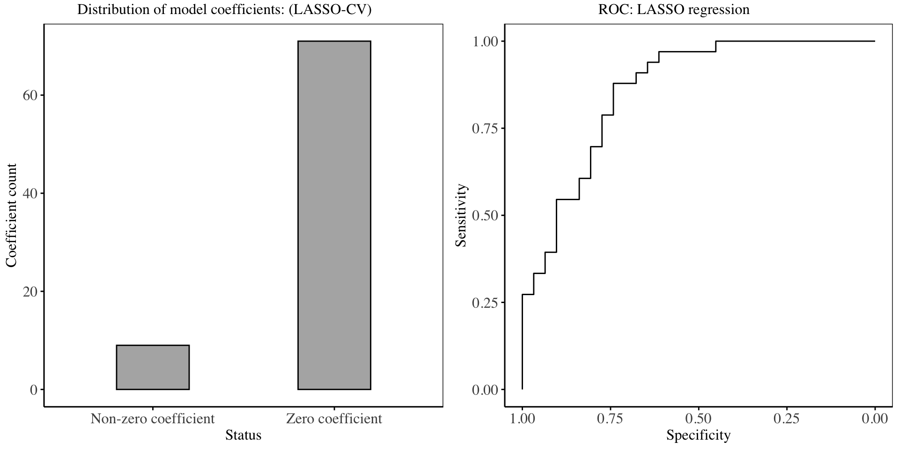
In the chart above, it is evident that about 87% of the model coefficients have set to 0, showing how effective LASSO regression is in feature selection. The performance of the LASSO regression model on the training dataset is shown in the Receiver Operating Characteristic Curve, with an AUC of: 0.8592.
Elastic-net Regression
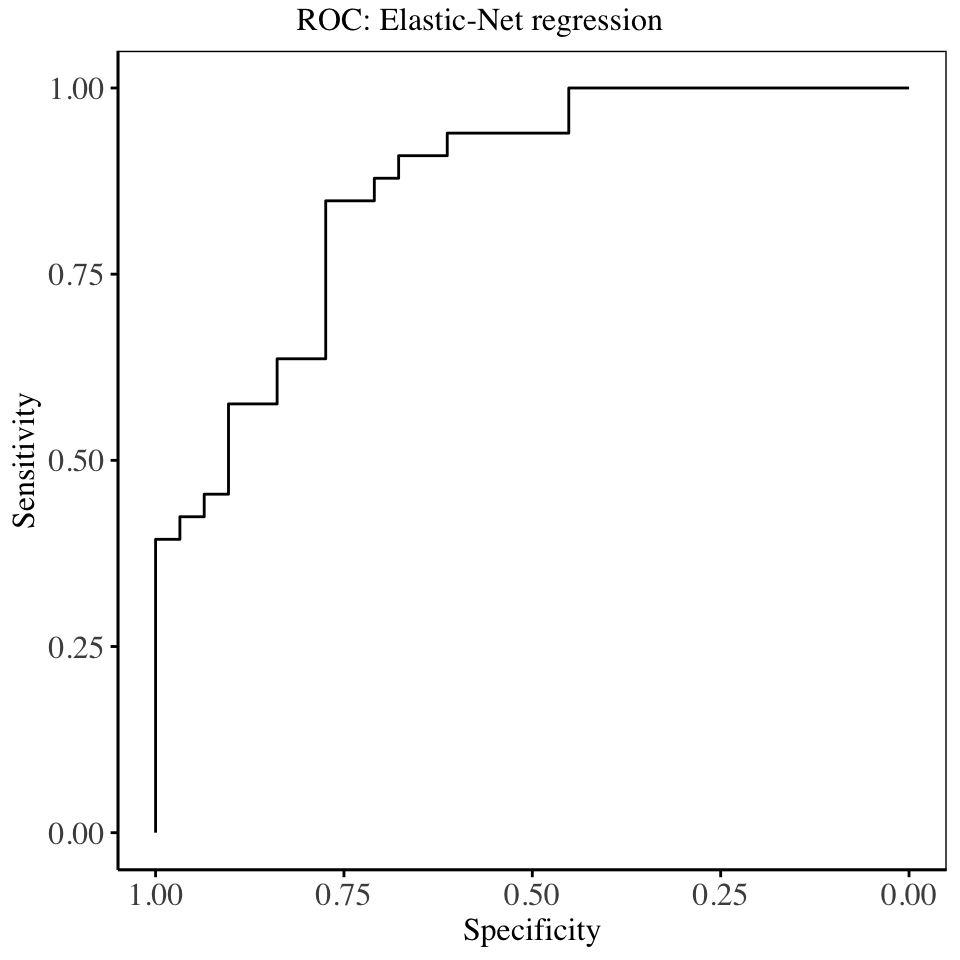
In this section, the fit of the mixture of LASSO and Ridge regression on the data is shown. Suitable values for the mixing weight \(\alpha\), and the redularization parameter, \(\lambda\) are found using cross validation, where for a fixed value of \(\alpha\), the best \(\lambda\) is searched for, and several accuracy metrics are computed.
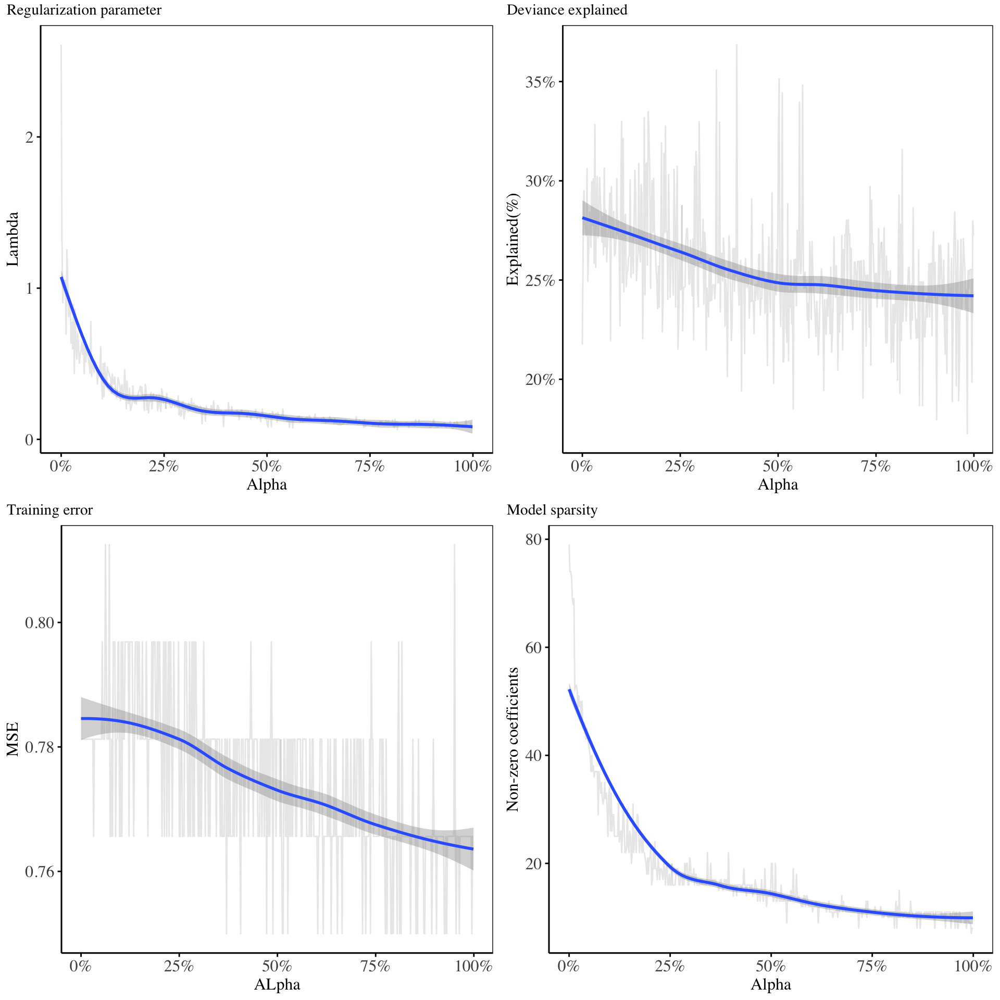
From the charts above, it is evident that as the \(\alpha\) increases, then the model tends to be more sparse, the deviance explained decreases while the training error rate decreases. The best combination of the \(\alpha\), and \(\lambda\) parameter are chosen to minimize the cross validation error.
Principal Components Analysis
oper 1 step center [training]
oper 2 step scale [training]
oper 3 step pca [training]
The retained training set is ~ 0.02 Mb in memory.In this section, we ran the principal components analysis model using 30 principal components and the results of cross validation on the principal components are displayed.
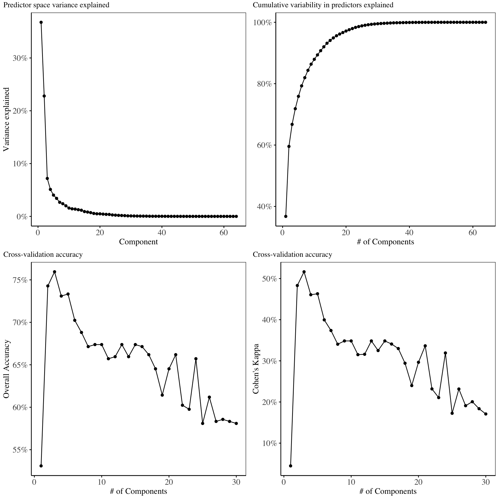
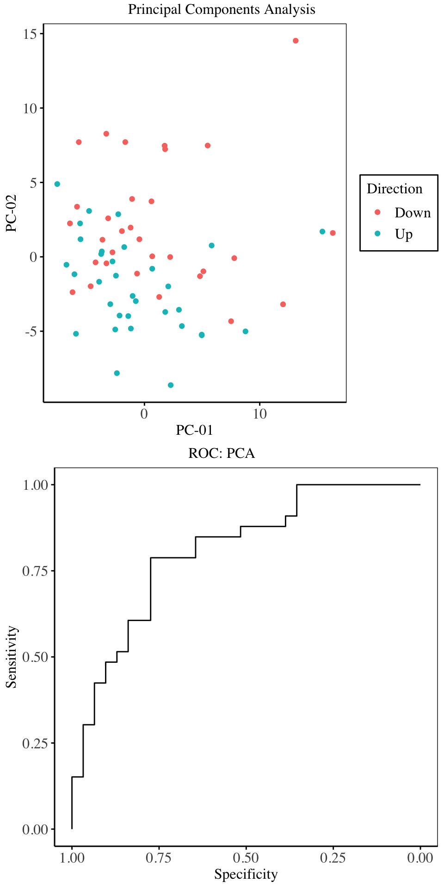
From the above charts, the first three principal components explain maximal variability in the predictor space. Cross validation on the training set indicates that, the first three principal components give the best model in terms of Overall accuracy and Kappa. Hence for the purpose of model fitting, we will only use three principal components.
Kernel Principal Components Analysis
oper 1 step center [training]
oper 2 step scale [training]
The retained training set is ~ 0.05 Mb in memory.oper 1 step center [training]
oper 2 step scale [training]
oper 3 step kpca [training]
The retained training set is ~ 0.02 Mb in memory.In this section, the Kernel principal components analysis model is fitted using 30 components and the cross validation results are shown below:
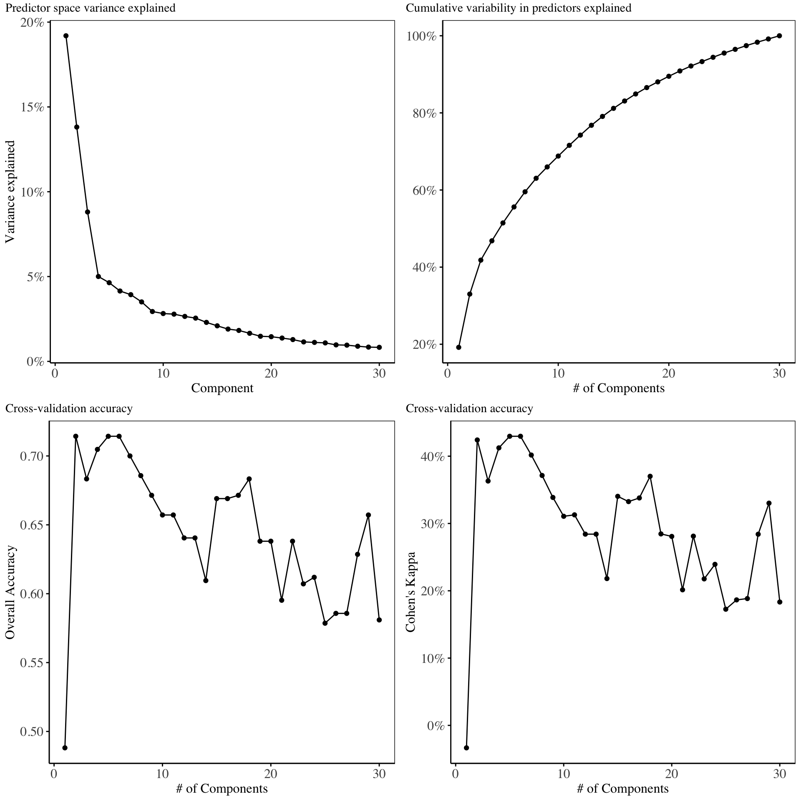
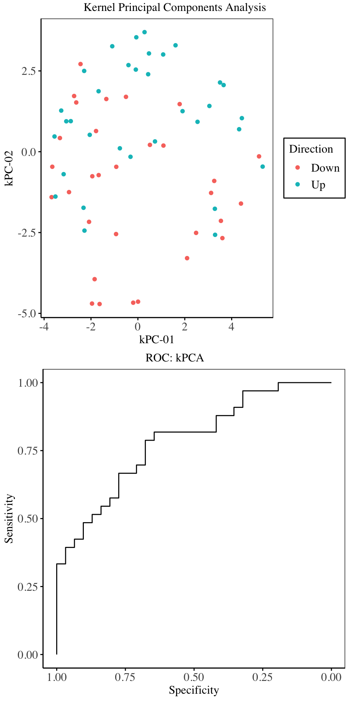
From the above charts, the first four components explain maximal variability in the predictor space. Cross validation on the training set indicate that, only the first two or five components give the best model in terms of Overall accuracy and Kappa. Hence for the purpose of model fitting, we will only use two components27.
27 This is because for the 5-component and 2-component model,there is no big difference, hence we fit a model using 2 components only to ensure parsimonity
Independent Components Analysis
oper 1 step center [training]
oper 2 step scale [training]
oper 3 step ica [training]
The retained training set is ~ 0.02 Mb in memory.This section covers the application of Independent Components Analysis to the classification dataset. We restrict the number of independent Components to 30 components.
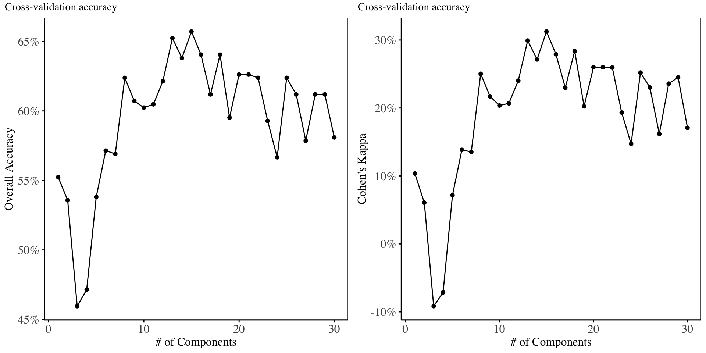
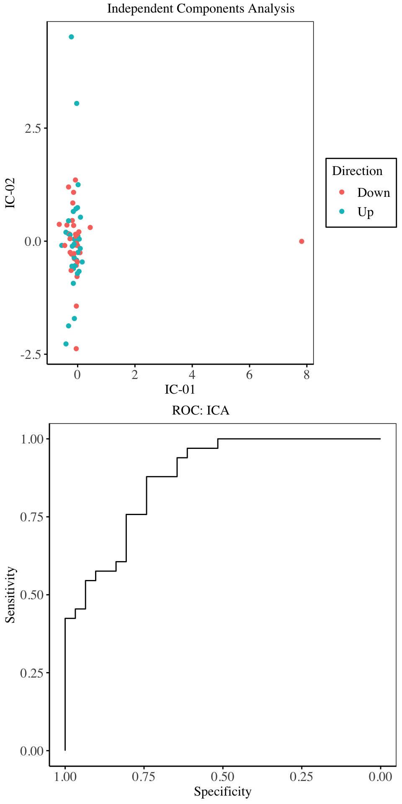
From the charts above, the highest overall accuracy and Kappa are obtained when using 15 independent components, although as compared to the cross validation performance of the other models above, the ICA under-performs all models. We proceed to fit a GLM using the first 15 components.
Comparison of Models
In this section, we compare all fitted models, on the test dataset. For comparison, we use the Overall Accuracy, although other metrics of classification models are quoted. For the cutoff probability, we select the cutoff which gave the highest Youden statistic on the training data.
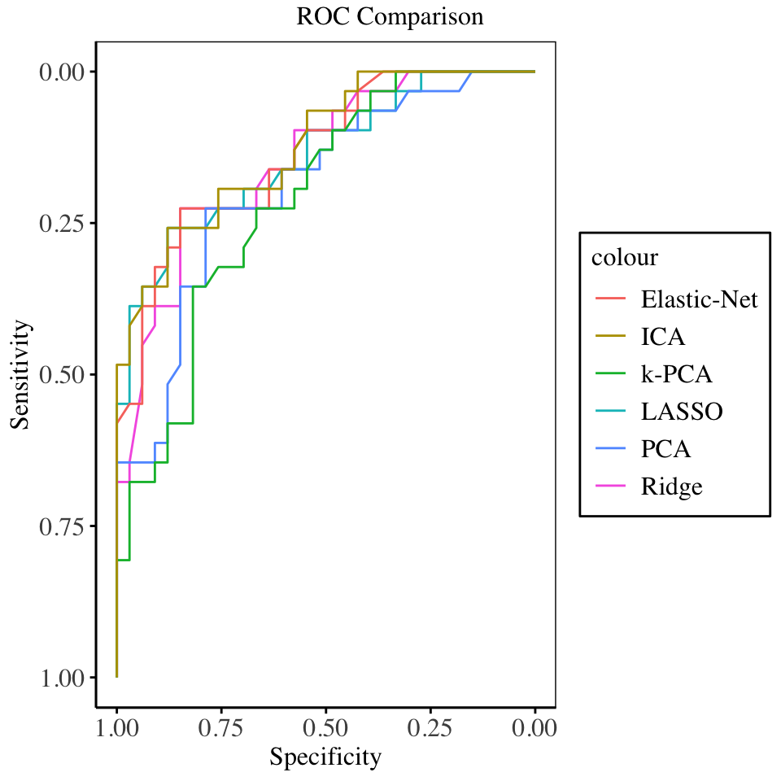
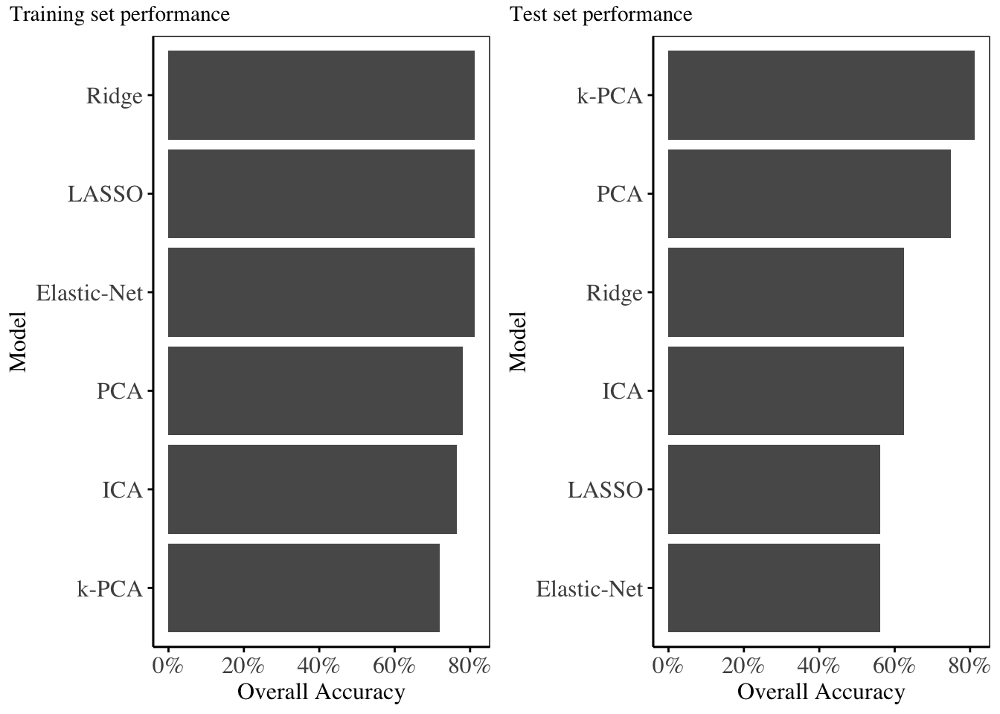
The training set performance metrics are displayed below:
| Model | Accuracy | Kappa | Sensitivity | Specificity | PPV | NPV | F1 |
|---|---|---|---|---|---|---|---|
| Ridge | 0.812500 | 0.6238981 | 0.7741935 | 0.8484848 | 0.8275862 | 0.8000000 | 0.8000000 |
| LASSO | 0.812500 | 0.6231600 | 0.7419355 | 0.8787879 | 0.8518519 | 0.7837838 | 0.7931034 |
| Elastic-Net | 0.812500 | 0.6238981 | 0.7741935 | 0.8484848 | 0.8275862 | 0.8000000 | 0.8000000 |
| PCA | 0.781250 | 0.5620723 | 0.7741935 | 0.7878788 | 0.7741935 | 0.7878788 | 0.7741935 |
| k-PCA | 0.718750 | 0.4347399 | 0.6451613 | 0.7878788 | 0.7407407 | 0.7027027 | 0.6896552 |
| ICA | 0.765625 | 0.5275591 | 0.6451613 | 0.8787879 | 0.8333333 | 0.7250000 | 0.7272727 |
Performance of Models on the training set
The testing set performance metrics are displayed below:
| Model | Accuracy | Kappa | Sensitivity | Specificity | PPV | NPV | F1 |
|---|---|---|---|---|---|---|---|
| Ridge | 0.6250 | 0.2835821 | 0.4444444 | 0.8571429 | 0.8000000 | 0.5454545 | 0.5714286 |
| LASSO | 0.5625 | 0.1515152 | 0.4444444 | 0.7142857 | 0.6666667 | 0.5000000 | 0.5333333 |
| Elastic-Net | 0.5625 | 0.1515152 | 0.4444444 | 0.7142857 | 0.6666667 | 0.5000000 | 0.5333333 |
| PCA | 0.7500 | 0.4920635 | 0.7777778 | 0.7142857 | 0.7777778 | 0.7142857 | 0.7777778 |
| k-PCA | 0.8125 | 0.6250000 | 0.7777778 | 0.8571429 | 0.8750000 | 0.7500000 | 0.8235294 |
| ICA | 0.6250 | 0.2615385 | 0.5555556 | 0.7142857 | 0.7142857 | 0.5555556 | 0.6250000 |
Performance of Models on the testing set
From the statistics and charts above, it is evident that Kernel PCA outperforms all other models on the testing set, with an overall accuracy of 81.25%, with all other models having accuracy below 80%.
The good performance exhibited by Kernel PCA over PCA, shows that there were some non-linear relationships within the predictors.
Conclusion
This study compares models for high dimensional data both in the regression and classification setting. The results show that, for regression: The elastic-net regression model, and Kernel-PCA outperform the rest in terms of Mean Squared Error. For the classification models fitted, the Kernel-PCA and PCA outperform the rest of the models. The consistency of the Kernel PCA in both settings shows that the dataset contained non-linear dependencies in the predictor space - which Kernel-PCA is good at uncovering.
For both settings, the dimensionality reduction models used including: PCA, k-PCA, and ICA, performed well in reducing the multi-collinearity inherent in the original dataset,and all the dimensionality reduction models show optimal performance with relatively few components used in the model - which helps in pointing out how important the dimensionality reduction models are at combating multi-collinearity in the data.
In both settings, the hyper-parameters for the final models fitted, such as: \(\alpha, \lambda\) for the ridge, LASSO and Elastic-Net models, and \(p\), the number of components to use for the dimensionality reduction models, were obtained through cross-validation on the training set. Since most models maintained consistency in both training and testing performance, then it shows that cross-validation is useful in determining good hyper-parameter estimates, for model fitting.
Recommendations
This article only focuses on a single dataset from Financial domain, where we are interested in predicting the returns, or direction a portfolio of assets would generate at a future time, using historical data of technical, fundamental, and statistical metrics.
Future research could look into utilizing these models for high-dimensional data from other domains such as health-care, marketing, etc.
Future research could look into other dimensionality reduction models not utilized in this article, such as Non-Negative Matrix Factorization.28
28 This research did not cover NNMF, due to computational constraints
Future research could look into the importance of these dimensionality reduction models, in the context of clustering, and other Machine Learning models not utilized in this study.
References
Bishop, C. (2011). Pattern Recognition and Machine Learning. Springer.
G. James et al. (2013). An Introduction to Statistical Learning: with Applications in R. Springer Texts in Statistics.
Hyvärinen, A., & Oja, E. (2000). Independent component analysis: Algorithms and applications. Neural Networks, 13(4-5), 411-430.
Kuhn, M., & Johnson, K. (2013). Applied Predictive Modeling. Springer.
MacKay, D. (2003). Information Theory, Inference and Learning Algorithms. Cambridge University Press.
Wickham, H., & Grolemund, G. (2016). R for Data Science: Import, Tidy, Transform, Visualize, and Model Data. O’Reilly Media, Inc.
Abdi, H., & Williams, L. (2010). Principal component analysis. Wiley Interdisciplinary Reviews: Computational Statistics, 2(4), 433-459.
Altman, D., & Bland, J. (1994). Diagnostic tests 3: Receiver operating characteristic plots. BMJ: British Medical Journal, 309(6948), 188.
Barker, M., & Rayens, W. (2003). Partial least squares for discrimination. Journal of Chemometrics, 17(3), 166-173.
Caputo, B., Sim, K., Furesjo, F., & Smola, A. (2002). Appearance-based object recognition using SVMs: Which kernel should I use? In Proceedings of NIPS Workshop on Statistical Methods for Computational Experiments in Visual Processing and Computer Vision, volume 2002.
Friedman, J., Tibshirani, R., & Hastie, T. (2010). Regularization paths for generalized linear models via coordinate descent. Journal of Statistical Software, 33(1), 1-22. doi:10.18637/jss.v033.i01 https://doi.org/10.18637/jss.v033.i01.
Kuhn, M. (2008). Building predictive models in R using the caret package. Journal of Statistical Software, 28(5), 1-26. doi:10.18637/jss.v028.i05 https://doi.org/10.18637/jss.v028.i05.
Tay, J. K., Narasimhan, B., & Hastie, T. (2023). Elastic net regularization paths for all generalized linear models. Journal of Statistical Software, 106(1), 1-31. doi:10.18637/jss.v106.i01 https://doi.org/10.18637/jss.v106.i01.
Karatzoglou, A., Smola, A., & Hornik, K. (2023). kernlab: Kernel-Based Machine Learning Lab. R package version 0.9-32, https://CRAN.R-project.org/package=kernlab.
Karatzoglou, A., Smola, A., Hornik, K., & Zeileis, A. (2004). kernlab - An S4 package for kernel methods in R. Journal of Statistical Software, 11(9), 1-20. doi:10.18637/jss.v011.i09 https://doi.org/10.18637/jss.v011.i09.
Liland, K., Mevik, B., & Wehrens, R. (2023). pls: Partial Least Squares and Principal Component Regression. R package version 2.8-3, https://CRAN.R-project.org/package=pls.
Kuhn, M. (2008). The caret package. Journal of Statistical Software, 28(5), 1-26. doi:10.18637/jss.v028.i05 https://doi.org/10.18637/jss.v028.i05.
Kuhn, M., Wickham, H., & Hvitfeldt, E. (2024). recipes: Preprocessing and Feature Engineering Steps for Modeling. R package version 1.0.10, https://CRAN.R-project.org/package=recipes.
Marchini, J. L., Heaton, C., & Ripley, B. D. (2023). fastICA: FastICA Algorithms to Perform ICA and Projection Pursuit. R package version 1.2-4, https://CRAN.R-project.org/package=fastICA.
Peterson, B. G., & Carl, P. (2020). PerformanceAnalytics: Econometric Tools for Performance and Risk Analysis. R package version 2.0.4, https://CRAN.R-project.org/package=PerformanceAnalytics.
R Core Team (2023). R: A Language and Environment for Statistical Computing. R Foundation for Statistical Computing, Vienna, Austria. https://www.R-project.org/.